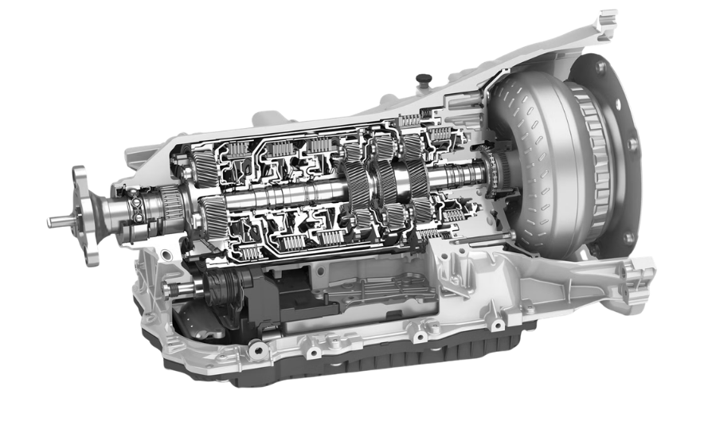
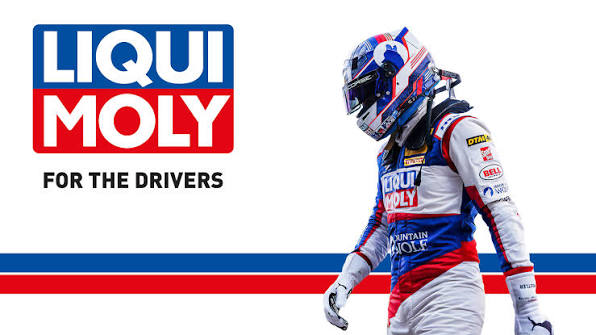

AT · CONVERTIDOR DE PAR
SHIFT PRO · SALTA
Especialistas en cajas automáticas
Nacimos del cuidado y la reparación de cajas automáticas. El resto del mantenimiento acompaña esa especialidad.

NO TODAS FUNCIONAN IGUAL
El fluido no solo lubrica: según el diseño, también transmite presión y ayuda a disipar calor y mantener la fricción prevista. AT, CVT y doble embrague funcionan de manera distinta; conocer qué caja equipa el vehículo es el primer paso para cuidarla con el fluido y el procedimiento adecuados.
Base técnica: AISIN · JATCO · Schaeffler
Conoce las referencias de serviceRangos orientativos de Shift Pro para evaluar cuándo revisar cada transmisión.
AT · CONVERTIDOR DE PAR
DCT · DOBLE EMBRAGUE*
CVT · VARIADOR CONTINUO*
Cada transmisión y cada vehículo tienen necesidades particulares. El intervalo depende del modelo, el tipo de caja y las condiciones de uso; por eso verificamos la recomendación del fabricante y el fluido adecuado antes de sugerir un service.
Shift Pro nació de la especialización en cuidado y reparación de transmisiones automáticas.
Realizamos mantenimiento preventivo, diagnóstico y reparaciones. El mantenimiento integral del vehículo y la atención a flotas complementan nuestra especialidad.
Explora nuestros serviciosEl mantenimiento integral del vehículo acompaña nuestra especialidad principal.
Contanos qué vehículo tenés y qué necesitás. Te orientamos en mantenimiento o reparación.
Ver atención para particulares SHIFT PRO / SERVICIOSMANTENIMIENTO PREMIUM · DIAGNÓSTICO ELECTRÓNICO · REPARACIONES PUNTUALES

Liqui Moly forma parte central de nuestra propuesta de mantenimiento. Elegimos los productos adecuados para cada vehículo y los aplicamos según sus necesidades de cuidado.
Conoce nuestros serviciosMás que un service,
la tranquilidad de
cuidarlo bien.
Cada vehículo tiene su historia y sus necesidades. Te ayudamos a cuidarlo con atención especializada, orientación clara y la experiencia que desarrollamos trabajando con transmisiones automáticas y electrónica. También realizamos reparaciones puntuales cuando hacen falta.
Consulta por tu vehículo ATENCIÓN PARTICULAR / 01CUIDADO A LA MEDIDA DE TU OPERACIÓN
No hay dos flotas iguales.
El tipo de vehículo, su uso y las condiciones de trabajo definen cada plan. Adaptamos el mantenimiento a tu operación.
Conversemos sobre tu flotaVehículos de trabajo y servicio.
Autos de alquiler y movilidad turística.
Flotas corporativas y diplomáticas.
Minería, transporte y operaciones exigentes.
SHIFT PRO · SALTA
Cuéntanos qué necesitas. Te ayudamos a encontrar el punto de partida.
Escríbenos por WhatsApp